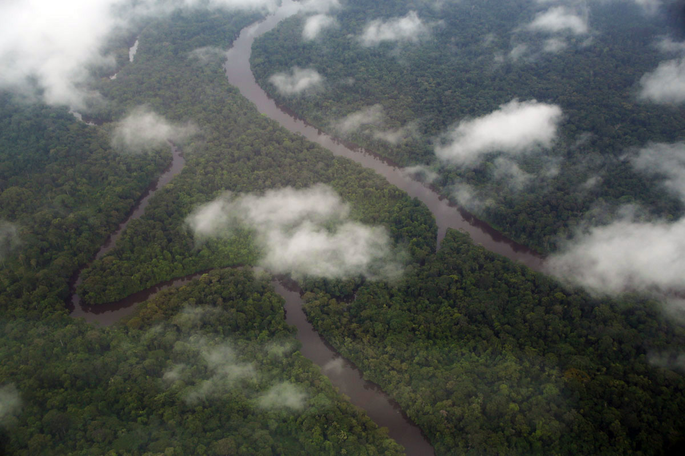
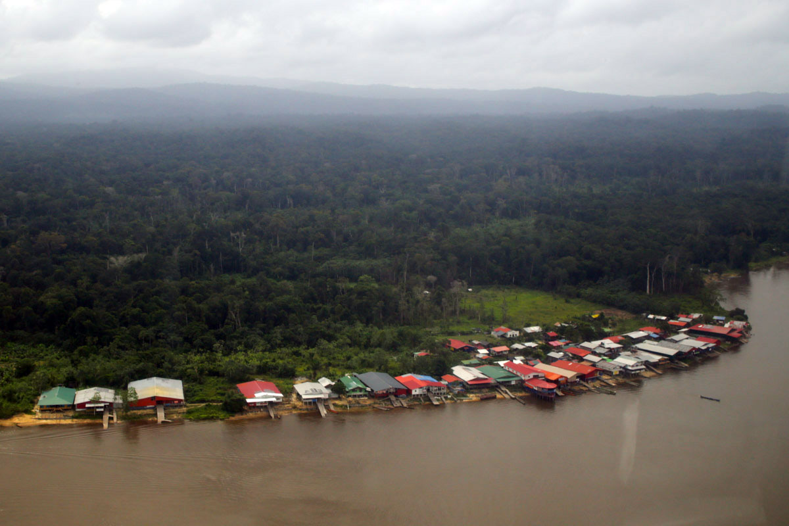
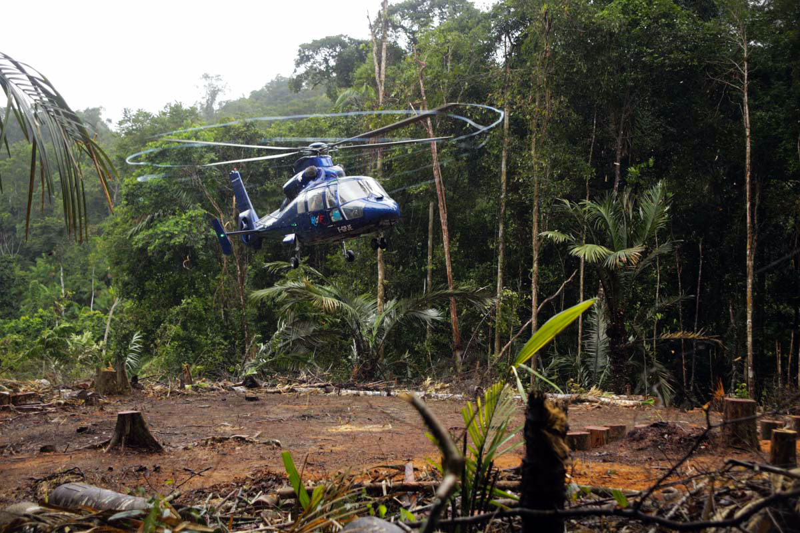
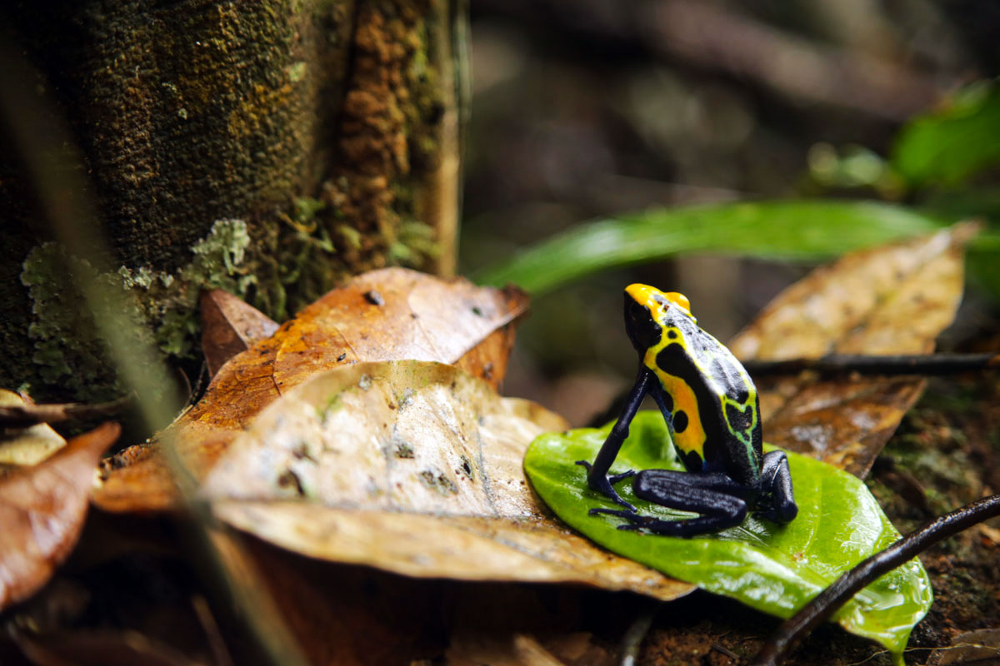

« Nous sommes les seuls au monde à monter ce type d'expéditions... » La mission dont parle Thomas Grenon, directeur du Muséum national d’histoire naturelle, va envoyer trente chercheurs pendant un mois dans le massif du Mitaraka, en Guyane. Leur objectif : recenser dans la jungle des mythiques monts Tumuc-Humac quelques-unes des espèces qui ont échappé aux radars de la science. Une aventure scientifique et humaine qui s'inscrit dans le programme « La planète revisitée », et que nous raconte le journaliste Yann Chavance, en immersion dans cette terra incognita de la biodiversité.
Une journée. Il aura fallu plus d’une journée pour rallier le camp de base de l’expédition depuis Paris. Après neuf heures de vol pour atteindre l’Amérique du Sud et la côte de Guyane française, première étape à Cayenne pour une courte nuit. Tôt le lendemain matin, c’est dans un avion bien plus modeste que nous reprenons les airs, un petit coucou d’à peine quinze places. Direction : Maripasoula, 220 kilomètres plus à l’ouest. Ce village de 10 000 âmes est l’un plus hauts sur le fleuve Maroni, qui sépare la Guyane de son voisin le Suriname.
C’est donc dans cette petite bourgade, melting-pot d’Amérindiens, de Noirs « marrons », de Brésiliens ou encore d’Haïtiens, que nous nous retrouvons tous sur le tarmac à attendre notre ultime taxi aérien. Pour rejoindre enfin notre destination, le massif du Mitaraka dans les monts Tumuc-Humac, à quelque 150 kilomètres plus au sud, l’hélicoptère se révèle être la seule option possible. Si le Maroni reste navigable bien après Maripasoula, les derniers kilomètres jusqu’au Mitaraka n’auraient pu se faire qu’à pied, à travers la jungle. Impossible, avec une trentaine de scientifiques et plusieurs tonnes de matériel. Ce qui explique aussi pourquoi cette région reste aujourd’hui quasi-inexplorée…
-

Vus du ciel, les méandres du fleuve coupent la forêt.
-

La commune de Maripasoula, le long du Maroni.
-

L’hélicoptère se pose sur la zone d’atterrissage du camp.
En milieu de journée ce lundi, une vingtaine de scientifiques se retrouvent ainsi à attendre un hélicoptère sur le dernier village du fleuve. Chacun chacun a sa spécialité, offrant à l’expédition la vision la plus large possible sur la faune et la flore locales : insectes, araignées, reptiles, amphibiens, arbres, plantes… Interrompant les discussions, un premier groupe décolle.
En quelques secondes, les derniers baraquements laissent place à la forêt amazonienne à perte de vue, inviolée. Quarante minutes de survol d’une jungle baignée par la brume et la pluie, qui dévoile un relief de plus en plus marqué. L’hélicoptère marque un virage serré entre deux collines, dévoilant une tâche brune crevant la forêt. Au milieu de nulle part, la piste d’atterrissage apparaît. A peine posé, le temps de vider le véhicule de ses passagers et leurs chargements, l’hélicoptère repart vers Maripasoula récupérer le prochain groupe.
Ce petit manège durera tout l’après-midi avant que les trente-trois membres d’expédition se trouvent enfin réunis, prêts à dévoiler toute la vie animale et végétale du Mitaraka. Mais avant, c’est l’heure pour chacun de découvrir le camp, le paysage grandiose qui l’entoure et sa quinzaine de carbets (structures en bois protégées de la pluie par de grandes bâches plastiques). Les plus impatients, une fois les bagages vidés et le hamac-moustiquaire déployé, commencent déjà, avant la tombée de la nuit, à placer les premiers pièges à interception censés capturer coléoptères, papillons, mouches et autres insectes volant à proximité. Mais pour tous, le véritable travail et les premières trouvailles commencent demain.
Yann Chavance
-

La pluie aidant, le camp est visité par de nombreuses dendrobates colorées.